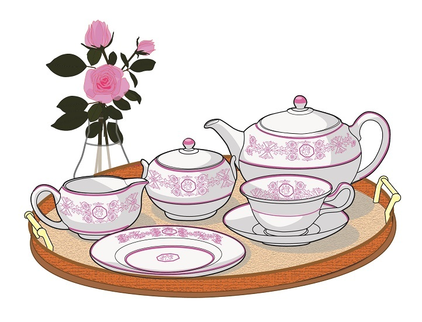

| ベンツ教授の英語で読む短編小説３ 高橋教授の対訳つき「天国行きの乗合馬車」 (知は力なり！シリーズ) | |
| 高橋 和久 | |
| etwas Neues (2016) | |
ベンツ教授の英語で読む短編小説
第３回 高橋教授の対訳つき「天国行きの乗合馬車」

英国短編小説の世界へようこそ
海外小説がとにかく大好き。そして英語で読んでみたい ―。
「ベンツ教授の英語で読む短編小説」は、代表的な近代イギリス人作家の短編小説を、簡単な日本語解説を読んだあとに、原文で読んでみる本です。今回は対訳をつけてくださったのが英文学者、高橋和久教授。おなじみ、フント大学フレンチ・ブルドッグのベンツ教授と一緒に読書をお楽しみください。

現在、本講義では学生募集中です。ペットの写真と一緒に、ベンツ教授への質問をお待ちしています。これは！という質問や読書感想文は、ベンツ教授の回答つきで次号に掲載されます。
本書への質問・読書感想文とペットの写真はこちらまで：etwasneuesbooks@gmail.com
- この本は横書きでレイアウトされています。
- また、ご覧になる環境により、表示の差が認められることがあります。
- 本作品では、ルビが（ ）内に表示されています。
はじめに

本書の使い方
1. 日本語訳と原文（英語）を対比しながら読みたい！パターン
2. 日本語訳を通して読みたい！パターン
3. 解説を見ながら読みたい！パターン

「天国行きの乗合馬車」（日本語）
Ⅰ
その少年の住むアガソックス・ロッジは、サービトン町のバッキンガム・パーク・ロード28番地にあった。少年は家のほぼ真向いに立っている古い案内板を見ては、いつも頭を悩ませていた。母親に尋ねると、それはいたずら、しかもあまり面白くないいたずらで、何年も前にやんちゃな若者たちがしでかしたものだという。警察が撤去すべきだわ、というのが母親の弁。というのも、この案内板には奇妙な点がふたつあったからだ。第一に、それが行き止まりの路地を指していること。第二に、文字は色褪せているが、そこに「天国行き」と記されていること。
「若者たちって、どんな人？」と少年は尋ねた。
「お父さんに聞いた覚えがあるけれど、若者のなかのひとりは詩を書いていた学生で、大学から放校処分を受けたの。それからいろいろひどい目にあったみたい。でもそれはずっと昔のこと。お父さんにお訊きなさい。きっとわたしと同じことを言うわ、あれはいたずらの産物だって」
「それじゃ何の意味もないんだね」
母親は少年を2階に上がらせて、よそゆきに着替えさせた。ボンズ家の人たちをお茶に呼んでいて、少年がケーキ・スタンドを回すことになっていたのだった。
ぴったりしたズボンに四苦八苦して足を通しながら少年がふと思いついたのは、あの案内板についてミスター・ボンズに訊いてみるのも悪くないな、ということ。父親はとても親切なのだが、いつも息子のことを笑い飛ばし、彼にしても他の少年にしても、何か尋ねたり話したりすると、けらけらと大声で笑うのだ。そこへいくと、ミスター・ボンズは親切だし、人の話を茶化したりしない。きれいな家に住んで、本も貸してくれる。教区委員をやっていて、町議会議員の候補にもなっている。町立図書館にたくさん寄付したし、文学クラブの会長さんだ。国会議員を家に泊めたことだってある。ひとことで言えば、誰よりも賢い人なのだ。
ところがそのミスター・ボンズの口からも、あの案内板はいたずら、シェリーという名の男のいたずらだという言葉しか聞けなかった。
「そうでしょうとも！」と母親が叫んだ。「だから言ったでしょ。そういう名前だったわ」
「シェリーという名を聞いたことはないかね？」とミスター・ボンズが尋ねた。
「ありません」と少年は答えて、頭を垂れた。
「でもまさかこちらの家にシェリーがないなんて」
「ありますとも！」 母親がむきになって叫んだ。「ミスター・ボンズ、わたしども、そんな俗物じゃありませんわ。少なくとも2冊は持っています。ひとつは結婚祝いに頂いたもので、もう1冊の小さな活字で印刷されたものは、お客様用の予備室に収めてあります」
「うちにはたしか7冊ありますがね」とミスター・ボンズはゆっくり笑いながら言った。それから腹部にこぼれていたケーキ屑を払い落とすと、娘と一緒に帰り支度をするのだった。
少年は母親から目配せをされて、庭先の門まで客を見送ったが、かれらが行ってしまってもすぐには家に戻らず、バッキンガム・パーク・ロードを左手から右手へとしばし見渡した。
両親の家はその通りのまともな区域の端に位置していた。39番地から先は建ち並ぶ家が急にみすぼらしくなる。64番地の家にいたっては勝手口さえない。だが今は通り全体がずいぶんときれいに見えた。太陽が輝きに包まれて沈んだばかりで、家賃の差はサフラン色の残光のなかに消えてしまっているのだった。小鳥がさえずり、家計の担い手たちの乗る列車が楽器のような汽笛を鳴らしながら切通しを通過していく。それはサービトンの美すべてを引き寄せた素晴らしい切通しで、モミや白樺の木々とサクラソウに覆われたその美観はアルプスの谷を思わせもする。少年の内なる欲望を最初にかきたてたのはこの切通しだった。それは他とは少し違うものを求める欲望。自分でもその正体は分からないが、この夕方のように周囲のものが日に照らされると、決まってその欲望が湧き上がって身体のなかを駆け巡り、全身がいつにない感じになって、何か叫びだしたい気分になったりもする。この夕方はもっと愚かな振舞いに及んでしまった。案内板目指して通りを横切り、行き止まりの路地の奥へと走り込んだのだ。
路地の両側は高い塀。それぞれ「アイヴァンホー」と「ベル・ヴィスタ」という庭園の塀が続いている。どこに立っても少しだけ匂う路地だとはいえ、端の角の部分を含めても端から端まで20ヤードもない。だから少年がすぐに立ち止まることになるのも当然だった。「あのシェリーとかいう奴を蹴飛ばしたいよ」と彼は叫び、何気なく目を遣ると、塀に紙切れが貼ってある。ずいぶんと奇妙な紙切れなので、引き返す前に丹念に読んでみた。以下がその文面である。
S. AND C.R.C.C.
運行予定改正
乗客数減少のため当社はやむを得ず毎時１回の運行を中止し
まあどんなに父親に笑われたことか！ 「かわいそう、かわいそうなおじょうちゃんだ！」と父親は叫んだ。「かわいちょうに、かわいちょうに！ てんごくに歩いて行ったのかな！」 そして母親も笑いこけながらアガソックス・ロッジの玄関に姿を現わした。「あなた、止めてよ！」と喘ぎながら言う。「そんな意地悪しないの！ まったく、息が苦しいわ！ ほんと、子どもをからかうのはいい加減にして！」
しかし、その夜ずっとからかいは止まなかった。父親は、自分も連れて行ってくれ、と言い出す始末。歩いて行くにはひどく疲れるところかい？ 玄関マットで靴を拭かないといけないのかね？ 少年はぐったりし、悲しい気分で床に就くことになった。ひとつだけよかったと思えるのは、乗合馬車について一言も口にしなかったということ。インチキなんだから。ところが夢のなかで、それは次第に現実味を帯びてきた。そして馬車の進むサービトンの街並みの方が、逆にインチキで幻のように思えてくる。そして翌朝、夜も明けぬうちに少年は叫び声をあげて目を覚ました。馬車の終点が垣間見えたのだ。
マッチを擦ると、その光で時計だけでなくカレンダーも照らし出された。日の出まであと30分と分かる。真っ暗闇だった。夜のうちにロンドンから霧が押し寄せてきて、サービトンの町をすっかり包み込んでしまったせいだった。それでも少年は跳び起きて着替えをした。どちらが、乗合馬車と街並みのどちらが現実なのか、一度でいいから確かめようと決心したのだ。「どっちにしろ馬鹿にされるんだから」と少年は思う、「確かめるまでは」 ほどなくして彼は、路地の入口を守って光っているガス灯の下の路上で、身体を震わせていた。
路地に入ること自体、多少とも勇気が要った。恐ろしいほど真っ暗であることに加えて、そこが乗合馬車の出発地にはなり得ないことが少年にもはっきり分かったのだ。霧のなかを近づいてくる警官の足音が聞こえなかったら、路地に足を踏み入れようとはしなかっただろう。足跡のおかげで次の瞬間、路地に突入。そして気落ちした。何もない。そこにあるのは行き止まりの路地と、ぽかんと口を開けて汚い地面を見つめているひどく間抜けな少年の姿だけ。やっぱりインチキだ。「お父さんとお母さんに話そう」と彼は心に決めた。「そうしなくちゃ。笑われても話さなくちゃ。死んでも仕方ないほど間抜けだもの」 そして少年はアガソックス・ロッジの玄関へと帰った。
そこで自分の時計が進んでいることを思い出した。まだ太陽は出ていない。日の出まで2分ある。「馬車が来るかどうか、最後まで見届けてやるか」 来ることは期待しないままそう考えて、少年は路地に戻った。
しかし乗合馬車はそこにいた。
Ⅱ

馬車を引いている馬は2頭。旅を終えたばかりで脇腹からまだ湯気を立てている。馬車についたふたつの大きなランプが霧を通して路地の塀を照らし、そこに張り付いたクモの巣や苔におとぎ話の世界を思わせる趣が宿る。馭者は身体を丸めてケープにくるまっている。彼の顔の前にはのっぺりした壁。こんなところにどうやってきちんと音もなく乗り入れることができたのか。それは少年にはどうにも答が見つからない多くの謎のひとつだった。それに、ここからどうやって馬車を出すのかも想像できなかった。
「すみませんが」という少年の声が茶色く濁った空気のなかで震えていた。「すみませんが、これが誰でも乗れる乗合馬車ですか？」
「万人のための馬車なり」と馭者は振り向きもせずに答える。一瞬の沈黙。警官が咳をしながら路地の入口を通っていく。少年は物陰にうずくまる。姿を見られたくないのだった。それにこれはきっともぐりの乗合馬車なんだ、と思う。考えてみれば、もぐりでないなら、こんな変な場所からこんな変な時刻に出発するはずがない。
「出発はいつになりますか？」 無頓着な風を装って尋ねる。
「日の出に」
「どこまで行くんですか？」
「終点まで」
「往復切符で終点まで行って帰って来られますか？」
「可能だ」
「あのう、乗ろうかなという気になっているんですが」 馭者は返事をしない。太陽が昇ったに違いない。馭者がブレーキを緩めた。そして少年が飛び乗るや、馬車は出発した。
どうやって？ 向きを変えたのか？ そんなスペースはない。直進したのか？ 前はのっぺりした壁。それなのに動いている ―― 霧のなかを堂々と進んでいる。霧は茶色から黄色に変わっていた。温かいベッドともっと温かい朝食のことを思うと気持ちが萎える。少年は来なければよかったと思った。お父さん、お母さんの両方から小言を食らいそうだ。天候が許せば、両親の元に戻りたかった。ひとりぼっちは怖い。乗っているのは自分だけ。それにこの馬車は頑丈に造られてはいるものの、寒くて少しかび臭い。少年がコートを引き寄せると、ふとポケットに手が触れた。空っぽだ。財布を忘れてきた。
「停めて！」と彼は叫んだ。「停めて！」そして礼儀正しい性質（たち）の少年は、馭者に名前で呼びかけようと名札を見上げた。「ミスター・ブラウン！ 停めて、ねえ、停めてください！」
ミスター・ブラウンは馬車を停めずに、仕切りの窓を開けて少年の顔を覗き込んだ。思いがけず優しくて控え目な表情をしている。
「ミスター・ブラウン、財布を置いてきてしまったんです。お金を持っていません。切符代を払えないんです。この時計を受け取ってもらえませんか？ どうしようもないんです」
「本路線の切符は」と馭者が言う、「片道、往復の別なく、地上造幣局の鋳造せる貨幣にては購入すること能わず。さりとて精密計時器は大帝シャルルマーニュの夜通しの祈りを励まし、ペトラルカの愛したラウラの微睡（まどろみ）の時を計ったにもせよ、牙をなくして天国を守るケルベロスを虜にせし重ねケーキを購うことは、いかように変じようとも叶わず！」そう言いながら、彼は必要な切符を手渡しすると、少年が「ありがとうございます」と礼を言っているあいだも言葉を続ける ―― 「肩書称号による仰々しき気取りが空しきことは百も承知しておるが、笑う唇から発せられるなら、非難も受けまい。同姓同名多き世ならば、それも聊か役に立とうというもの。肩書称号を付せば、とあるジャックを他のもろもろのジャックと区別することができるからの。そういう次第で以後、わしのことはサー・トマス・ブラウンと記憶されたい」
「サーなんですか？ それは失礼しました」少年は紳士が馬車の馭者をやったりもするという話を聞いたことがあった。「切符をくださって本当にありがとうございます。でもこんな具合でなさっていたら、この馬車で採算は取れないんじゃないですか？」
「採算は取れぬ。採算など最初から考えておらんのだ。この飾り馬車には瑕疵が多くての。異国の木材を用いて凝りすぎた意匠。疲れを和らげるよりは学識をくすぐる褥。それにこれを引く馬たちときたら、当今の緑なす牧草ではなく、干からびたラテン語の乾草を飼葉としておるしな。だが採算なんぞ知ったことか！ いずれにもせよ、そんな過てる目途は定められることも、実現されることもなかったがな」
「それはまた失礼なことを言ってしまいました」と少年は途方に暮れて言った。サー・トマスは悲しそうな顔をした。一瞬にもせよ、少年を悲しませてしまったと気になったのだ。彼は少年を馭者台に招いて、隣に座らせた。そしてふたりしてともに、今や黄色から白色に変わりつつある霧のなかを進んでいった。道沿いに家の姿はない。それならパトニー・ヒースかウィンブルドン・コモンのあたりに違いない。
「ずっと馭者をなさっているんですか？」
「以前は医者だった」
「でも止めてしまったのは？ 名医じゃなかったんですか？」
「肉体の治療に関しては、ほとんど成果を上げられずじまいだった。何十人もの患者がわしより早く先立って逝ってしまった。だが精神の治療に関して言えば、自分でも思いがけぬほどの、そして過分の成功を収めた。というのもな、わしの調合した百薬の長は、他の手になるものと比べて味も香りも優っていたわけではないのだが、それを供した酒杯が精巧な作りのものだったせいで、おぼろげな不安を抱えた患者たちが、何かというとそれで一口味わっては生気を取り戻したいという気になったわけだ」
「おぼろげな不安か」少年が呟いた。「太陽が木々の向こうに沈むとします、すると急に全身が奇妙な感じに襲われる。それっておぼろげな不安ですか？」
「そんな感じを味わったことがあるのか？」
「あります」
ひと呼吸おいて、サー・トマスは旅路の終点について少し、ほんの少しだけ教えてくれた。しかしふたりはあまりおしゃべりをしなかった。少年は好きな相手だと、話すよりは黙ってその人と一緒にいる方が好きだったから。そして彼は気づくのだった、サー・トマス・ブラウンも、さらにはこれから知り合うことになる多くの人たちも同じ気持ちだということに。しかしシェリーという例の若者については話を聞いた。今ではすっかり有名人で、自分の馬車を持っているとのこと。それからこの会社で働いている他の馭者の何人かについても話してもらった。そうしているうちに次第に光が強くなってきた。霧は晴れないものの、霧というより霞に近くなって、ときどき雲の欠片のように馬車の前を素早く横切っていく。何とも訳の分からないことだが、馬車もずっと坂をのぼってきたのだ。2時間以上もずっと、首輪が馬の肩に擦れたままになっていたではないか。行先がリッチモンド・ヒルだとしても、とっくの昔に頂上に着いていたはず。ひょっとするとまったく逆方向に進んできて、目指すのはエプソム、いやノース・ダウンズなのかもしれない。しかし吹いている風はそのどちらの土地よりも肌を刺すような気がする。それに目的地の名前については、サー・トマス・ブラウンは黙して語らないのだった。
ガラガラ！
「あれ、雷だ！」と少年が言う、「それにそんなに遠くない。雷鳴がこだましていますよ！ 山に囲まれているみたい」
少年は、うすぼんやりとではあるが、父親と母親の姿を想像した。ふたりがソーセージを前に朝の食卓に向かい、雷に耳を澄ましているところ。自分の席に誰もいないのが見える。あれやこれやと質問され、心配され、推測され、からかわれ、慰められ、ってことになるな。ふたりとも、昼食には帰ってくると思っているだろう。昼食にも、お茶の時間にも戻れない。でも夕食には戻ろう。それで1日の無断外出は終了。財布を忘れてこなければ、お土産を持って帰れるのだけれど ―― もっとも、何を土産にすればいいか、少年に分かっていたわけではない。
ガラガラ！
雷鳴と稲妻が同時にやって来た。雲がまるで生きているみたいに震え、霞がちぎれて流れるように次々に飛び去っていく。「怖いか？」 サー・トマス・ブラウンが尋ねた。
「怖がるって、いったい何を？ まだ遠いんですか？」
馬車を引いていた馬が停まったちょうどそのとき、火の玉が破裂して周囲に響きわたる爆音を発した。それは耳を聾するばかりだが澄み切っていて、鍛冶屋の仕事場の音を思わせる。一面の雲が砕け散った。
「すごい、聞いてよ、サー・トマス・ブラウン！ 違った、見てください。やっと見晴らしがよくなりますね。いや、聞いてください、虹みたいな音ですよ！」
爆音は次第に静まって、かすかな呟きに変わった。その下から別の呟きが湧きあがり、粛々坦々と弧を描く。その弧は幅を広げながら、形は変わらない。そして広がっていく幾重かの弧となって、虹が馬の足許から消えつつある霞のなかへと伸びていく。
「でも何て美しいんだろう！ その色といったら！ どこまで伸びるんだろう？ その上を歩けそうな虹。夢みたいだ」
色と音がともに際立ってくる。虹が巨大な深い谷にかかる橋になった。その下に殺到する雲を貫き、虹はさらに前へと伸びて、暗闇を征服し、ついには雲よりも固そうな何かに触れる。
少年は立ち上がった。「あっちにあるのは何ですか？」と声をかける。「向こう側で虹は何の上に乗っているんです？」
朝の陽光のなかで、深い谷の向こうの断崖が輝いている。断崖 ―― それとも城だろうか。馬が動いた。その足は虹の上にあった。
「ねえ、見て！」 少年が叫んだ。「ねえ、聞いて！ あそこに並んだ洞窟 ―― それとも出入り口かな？ ほら、あの崖と崖のあいだに見えるいくつも突き出た岩棚。人も見える！ 木立も見える！」
「下も見るがいい」とサー・トマスは小声で言った。「より神聖なるアケローンを見逃してはいかんぞ」
少年は下を見た。馬車の車輪をなめている虹の炎の先へと目を凝らす。深い谷もすでに晴れ上がっていて、その底を永遠の川が流れている。一条の陽光が差し込んで、緑色の池を照らした。その上を通りながら見ていると、3人の乙女が池の水面に姿を現わした。歌いながら、指輪らしき光を湛える何かと戯れている。
「下の水のなかにいるみなさん ――」 少年が呼びかけた。
3人の乙女が答える、「上の橋にいるあなた ――」 急に音楽が響きわたった。「上の橋にいるあなた、あなたに幸あれ。深みに真実あり、高みに真実あり」
「水のなかにいるみなさん、何をなさっているんですか？」
サー・トマス・ブラウンが答えた、「黄金を守るという仕事を負わされて、それを楽しんでいるのだ」 そして馬車は到着した。
Ⅲ
少年は屈辱を味わった。アガソックス・ロッジの子ども部屋に閉じ込められて、詩を暗唱するという罰を与えられたのだ。父親は言った、「いいか、偽りを言うことだけは許さんからな」 そして少年を鞭打っては、打つたびに「乗合馬車などないゾ、馭者などいないゾ、橋もないゾ、山もないゾ、おまえは怠け者ダ、浮浪児ダ、嘘つきダ」と言うのだった。ときにひどく厳しくなることもある父親なのだ。母親は謝ってちょうだいと言った。しかし少年にはそれができなかった。これまでの人生で最高の1日だったのだ。その終わりに鞭打ちと詩の暗唱が待っていたけれども。
帰ってきたのはきっかり日没時 ―― 馭者はサー・トマス・ブラウンではなく、静かに面白いことをたくさん話してくれる独身の婦人だった。乗合馬車やバルーシュ・ランドー型四輪馬車について語り合った。彼女の優しい声がすっかり遠くのもののように思える。でも彼女と路地で別れてからまだ3時間も経っていない。
母親がドアの外から声を掛けた。「さあ、降りてきて、暗唱してみせるのよ」
少年は下に降りた。喫煙室に父親と一緒にミスター・ボンズがいる。夕食会なのだ。
「大旅行家のお出ましか」と父親が厳めしい声で言った。「この若き紳士は乗合馬車で虹をわたり、若い娘たちに歌をうたってもらったらしい」 父親はいかにも気の利いたことを口にしたとばかり、上機嫌になって笑った。
「つまるところ」とミスター・ボンズが微笑みながら言う、「ちょっとそれに似たところがワーグナーにありますからね。それにしても奇妙ですな、ほとんど無学の子どもが芸術的真実を垣間見るとは。なかなか興味深い事例です。罪人の弁護をやらせてもらいましょうか。誰しも子どものときには、空想逞しく何でもロマンス色に染め上げるものでしょう？」
「ミスター・ボンズの何て優しいこと」と母親が言うのを待って、父親が言った、「よし、詩を暗唱させてみよう。暗唱できたら、もうそれだけで十分。この子を火曜日に妹のところに行かせればいい。彼女にかかればこんな路地放浪病などすぐ治るさ」（一同笑う）「さあ、暗唱してごらん」
少年は始めた。「『わたしはただ巨大な無知の中に立ち』」
父親が再び笑った ―― 呵々大笑である。「お前にうってつけじゃないか、我が息子よ！『わたしはただ巨大な無知の中に立ち』とはな！ 詩人がものの分かったことを言うとは知らなかったぞ。まさにお前そのものだな。さあ、ミスター・ボンズ、詩はあなたのご専門だ。この子にちゃんと暗唱させてくれませんか。わたしはウィスキーを取ってきましょう」
「いいでしょう、そのキーツ詩集をこちらにください」とミスター・ボンズは言った。「わたしを相手に暗唱してもらうことにしましょう」
こうしてしばし喫煙室には賢い大人と無知な少年のふたりだけになった。
「『わたしはただ巨大な無知の中に立ち、あなたやキュクラデスの島々の噂を聞く。浜辺に座り、もしかして訪れられはしないか、と望む人のように ――』」
「その通り。何を訪れるのだ？」
「『海中深くイルカの住む珊瑚を訪れられはしないか、と』」そう言って、少年は急に泣き出した。
「おいおい、どうして泣くんだ？」
「だって ―― だって、前はきれいな詩の言葉でしかなかったのに、あそこから戻ってきた今、全部がぼくのことを言っているから」
ミスター・ボンズはキーツ詩集を置いた。この事例は思ったより興味深い。「君の？」と彼は叫んだ。「ホメロスを讃えたこのソネットが君のことをうたっているだと？」
「そうです ―― さらに、その先も。『そうなのだ、闇に覆われた岸辺に光が差し、断崖が未踏の緑地を指し示す』 まったくこの通りなんです。これは全部、本当のことなんです」
「それを疑ったことなど一度もないよ」とミスター・ボンズは目を閉じたまま言った。
「おじさんは ―― それじゃあ、おじさんはぼくのこと、信じてくれるんですね。乗合馬車も馭者も雷も、ただでもらった往復切符も、それから ――」
「ちょっと、そこまでだ！ 作り話はもう結構。わたしの言ったのは、詩の本質的真実を疑ったことがない、という意味だ。もっと勉強すれば、いつの日かわたしの言った意味が分かるだろう」
「でもミスター・ボンズ、その通りなんですよ。まさに光が闇の岸辺に差すんです。ぼくは光がやってくるのを見ました。光と風が」
「馬鹿馬鹿しい」とミスター・ボンズは言った。
「ああ、あっちに残っていればな！ みんなから残るよう誘われたんです。切符なんか捨てて ―― 切符をなくしたら帰れませんから。川の方から切符をちょうだいって声が聞こえて。そうしようかなって気になりました。だってあの断崖に囲まれたときほど幸せを感じたことはなかったですから。でもお母さんとお父さんのことを思い出して、一緒に連れてこなくては、と思ったんです。だけど、ふたりとも行きたくないって言うんです。うちのすぐ向かいから出発しているっていうのに。何もかも上にいた人たちの言った通りだな。ミスター・ボンズも他のみんなと同じで信じてくれなかったし。鞭で打たれたし。二度とあの山は見られないな」
「わたしが何だって？」 ミスター・ボンズは急に椅子に座り直して言った。
「あの人たちにおじさんのことを話したんです。どんなに賢くて、どれほど本を読んでいるかって。そうしたらみんなして言ったんです、『ミスター・ボンズは絶対に君のことを信じやしない』って」
「馬鹿もいい加減にしてくれよ。分をわきまえなさい。わたしが、いいとも、このわたしがけりをつけてあげよう。お父さんには何も言うな。わたしが君の病気を治す。明日の夕方、わたしがここに来て、君を散歩に連れ出そう。そして日没になったら向かいの路地に入って、君の言う乗合馬車を探そうじゃないか。馬鹿げた話だが」
ミスター・ボンズは真面目な顔つきになった。少年がうろたえると思いきや、部屋のなかをうたいながら跳びまわったからである。「やった！ やった！ あの人たちに言ったんだ、おじさんなら信じてくれるって。一緒に馬車で虹をわたるぞ。おじさんはきっと来てくれるって言ったんだから」 まさかとしか思えないが、 このほら話には何かがあるなんてことがありえようか？ ワーグナーにしろ、キーツにしろ、シェリーにしろ、サー・トマス・ブラウンにしろ。たしかに興味深い事例だ。
そして翌日の夕方、土砂降りではあったが、ミスター・ボンズは約束をたがえずアガソックス・ロッジにやって来た。
少年は気もそぞろ、興奮のあまり大はしゃぎ。あちこち跳ねまわっては文学クラブの会長をいささか困惑させた。ふたりはバッキンガム・パーク・ロードをわたり、それから ―― 誰も見ているものがいないことを確認したうえで ―― そっと路地に入った。当然のことながら（太陽が沈みつつあったので）、ふたりして馬車にぶつかることになった。
「これはまた！」 ミスター・ボンズが叫んだ。「まったく何てことだ！」
今度の馬車は最初に乗った馬車でもなく、帰りに乗った馬車でもない。馬が3頭。黒と葦毛（あしげ）と白で、葦毛がいちばん素敵だった。これはまた、何てことだという声を耳にして馭者が振り向いた。顔は土色、顎は見るものを威嚇するように先が尖り、落ちくぼんだ目をしている。ミスター・ボンズはそれを見るなり、誰だか分かったみたいに叫び声をあげ、激しく身体を震わせ始めた。
少年が飛び乗った。
「まさかこんなことが？」 ミスター・ボンズは喚いた。「こんなことがあっていいのか？」
「おじさん、乗りましょう。とっても立派な馬車ですよ。あっ、ここに名札が ―― ダン何とかって」
ミスター・ボンズも飛び乗った。一陣の風が吹いて、乗合馬車のドアがばたんと閉まり、その衝撃で窓にかかったブラインドがすべて下りる。ばねがあまり効かなくなっていたのだ。
「ダン何とかだと、どれどれ。大変だ、動き出したぞ」
「やったぁ！」 少年が叫ぶ。
ミスター・ボンズはうろたえた。誘拐されるなど思ってもみないことだった。ドアの取っ手は見つからず、ブラインドを上げることもできない。車内は真っ暗で、マッチを擦ったときには、外もすでに夜の帳（とばり）が降りていた。馬車はスピードを上げて走っている。
「不思議な記憶すべき冒険だな」 彼はそう言いながら、車内を見回した。大きく広々としていて、すべての部分が正確に他の部分と符合するよう寸分の狂いなく規則正しく組み立てられている。ドア（取っ手は外側に付いていた）の上に Lasciate ogni baldanza voi che entrate と書いてある。少なくともそれが書かれている文字だった。ところがミスター・ボンズは、ラッシ・アーテ何とかと口走りながら、ここにはbaldanzaと書いてあるが、これはsperanzaの間違いだ、と言った。その声は教会で説教しているみたいに響いた。そのあいだに少年は痩せこけた馭者に往復切符を2枚くださいと声をかけた。切符は無言のまま手渡された。ミスター・ボンズは片手で顔を覆い、また身体を震わせている。「あれが誰か分かるか！」 馭者の小窓が閉まったとたんに、彼が声をひそめて言った。「ありえないことだ」
「えっと、サー・トマス・ブラウンほど好きになれないけれど。でもこの人の方が何かもっと重々しい感じもするけれど」
「もっと重々しいだと？」 ミスター・ボンズは苛立たしげに足を踏み鳴らす。「ふとした偶然で世紀の大発見をしたんだぞ。この人はもっと重々しい、としか言えることはないのか。わたしの家の書斎にある仔牛革装丁の本を覚えていないのか？ 赤い百合の模様が刻印してある本だ。いいか ―― 驚いて飛び上がるんじゃないぞ、仰天するようなことを教えるから ―― 運転しているのは、他ならぬあの本を書いたお方だ」
少年は飛び上がったりしなかった。そして相手に失礼にならないようにしばらく間をおいてから、「ミセス・ギャンプに会えるかなあ」と言った。
「ミセス誰だと？」
「ミセス・ギャンプとミセス・ハリスです。ミセス・ハリスはぼくのお気に入り。思いがけずふたりに会ったんです。ミセス・ギャンプがいくつも持っている筒型の帽子入れが虹の橋を転がって行ったんですが、転がり具合が悪くて、どれも底が抜けてしまったんです。それに彼女のベッドを飾っていた木彫りのリンゴもふたつが川におっこっちゃって」
「そこにわたしの持っている仔牛革装丁の本を書いたお方がいるんだぞ」とミスター・ボンズの雷が落ちた。「それなのにディケンズや彼の創作したミセス・ギャンプのことなんか話題にするとはどういうつもりだ？」
「ミセス・ギャンプのことはよく知っているから」と少年は弁解した。「会えてうれしくて仕方がなかったんです。声を聞いてすぐに彼女だって分かりました。ミセス・ハリスにミセス・プリッグの噂話をしているところでした」
「ミセス・ギャンプとまる一日、そうやって付き合って人格形成に精を出していたのか？」
「いえ、違います。競走もしました。出会った男の人がレース場に連れて行ってくれたんです。そこで走ると、海でイルカの泳いでいるのが見えるんですよ」
「なるほど。その男の人の名を覚えているか？」
「アキレウス。いや違った、それは後で会った人。トム・ジョーンズだ」
ミスター・ボンズは深くため息をついた。「やれやれ、まったく何もかも台無しにしてしまったな。教養のある人間が同じ機会を得たらどうなるか、考えてみるといい。教養のある人間ならそうした人たちのことを知っていただろうし、それぞれに何を言うべきか心得ていただろう。ミセス・ギャンプやトム・ジョーンズといった俗っぽい連中相手に時間を浪費したりはしなかったはず。教養人の満足できる相手は、ホメロスやシェイクスピアやこの馬車の馭者が生み出した人物たちだけだっただろうから。教養人なら競走なんぞせず、知的な質問をしただろうな」
「でも、ミスター・ボンズ」と少年は神妙にかしこまって言った、「おじさんには教養があるんでしょう。みんなにそう言っておきました」
「たしかに、その通り。だから向こうに着いたら、わたしの顔に泥を塗るようなまねはしないでくれよ。くだらん噂話や競走はなしだ。わたしの傍を離れず、話しかけられるまで、そうした不滅の人びとに自分から話しかけてはいかん。そうだ、往復切符を渡しなさい。持っているとなくしかねないだろう」
少年は切符を渡したが、いささかむっとした。何と言っても、ぼくがここへ来る道を見つけたんだ。最初は信じていなかったくせに、今度はお説教なんてひどすぎる。いつの間にか雨は止んでいて、月光がブラインドの隙間から車内にひっそりと差し込んでいた。
「でも虹の橋はどうやってできるんだろう？」と少年は叫んだ。
「気を散らすんじゃない」とミスター・ボンズがぴしゃりと相手の口を封じた。「わたしは美について思いを巡らせたいのだ。連れが敬意と共感の持ち主でないのが実に残念だ」
少年は唇を噛んだ。いくつもの立派な決心をしたのだ。この訪問のあいだ、ずっとミスター・ボンズを見習うこと。笑ったり走ったり歌ったりしないし、昨日できた新しい友人たちをうんざりさせたに違いない品のないことは一切やらない。あの人たちの名前を正しく言うこと。そして誰が誰の知合いかをよく覚えておかなくては。アキレウスはトム・ジョーンズの知り合いではない ―― 少なくともミスター・ボンズはそう言っている。モルフィ公爵夫人はミセス・ギャンプよりもずっと前に生まれている ―― 少なくともミスター・ボンズはそう言っている。自分の振舞いに気をつけて、口を慎み、しゃんとしていよう。ところが、彼の頭が偶然触れた拍子にブラインドが跳ね上がると、こうした立派な決心はどこかに吹き飛んでしまった。というのも、馬車は月光に照らされた山の頂上に到着していて、あの深い谷が見え、その向こうに懐かしい断崖が永遠の川に足を置き、夢見るようにそびえていたからである。少年は叫んだ、「あの山！ 川が新しい旋律を奏でている！ 谷間谷間にかがり火が見えますよ」 すると、さっと一瞥をくれたミスター・ボンズが言い返した、「川だ？ かがり火だ？ 何を馬鹿なこと。黙りなさい。何もないじゃないか」
ところが少年の目の下には虹の橋が架かっていた。今度は陽光と雷雨ではなく、月光と川の水しぶきでできている。3頭の馬がそこに足をかけた。見たこともないほど素敵な虹だ、と少年は思うのだが、ミスター・ボンズに何もないじゃないかと言われたので、それを口にする勇気はなかった。少年は身を乗り出し ―― 窓は開いていた ―― 眠れる川から立ち上ってきた旋律を歌った。
「まさか『ラインの黄金』の前奏曲？」不意にミスター・ボンズが言った。「誰からこの示導動機（ライトモチーフ）を教わったんだ？」 そう言って、彼もまた窓の外を覗く。するとその後の振舞いが奇妙だった。息の詰まったような叫び声をあげ、馬車の床に倒れ込んだのである。身をよじって足をばたつかせる。顔から血の気が引いていた。
「虹の橋のせいでめまいがしますか？」と少年が尋ねた。
「めまいだって！」 ミスター・ボンズはろくに息もできない。「帰りたい。馭者にそう言ってくれ」
しかし馭者は首を横に振った。
「もうすぐ着きますよ」と少年は言った。「みんな眠っているんです。声をかけましょうか。おじさんに会ったら喜びますよ。おじさんのこと、言ってあるんですから」
ミスター・ボンズはうめいた。月の虹を渡っているのだが、馬車の通った後から虹が壊れていく。何て静かな夜だろう！ 入口を守る衛兵は誰だろう？
「いま行きます」 少年は叫んだ。またしてもいくつもの立派な決心を忘れてしまっていた。「戻ってきました ―― ぼくです、昨日の男の子です」
「あの子が帰ってくるぞ」 ひとつの声に他の声が唱和する。そして「あの子が帰ってくるぞ」と繰り返される。
「ミスター・ボンズを連れて行くよ」
沈黙。
「ミスター・ボンズに連れて行ってもらうよ、って言わなくちゃいけなかったね」
深い沈黙。
「衛兵に立っているのは誰？」
「アキレウスだ」
虹の橋のたもと近くの盛り上がった岩場に、素晴らしい盾を抱えた若い男の姿が見える。
「ミスター・ボンズ、アキレウスですよ、武具で身を固めている」
「わたしは帰りたいんだ」とミスター・ボンズは言った。
虹の橋の最後の一片が融けてしまい、車輪が歌をうたいながら生きた岩の上に乗った。乗合馬車のドアがぱっと開く。少年は馬車から飛び降り ―― 我慢できなかったのだ ―― 戦士のもとに勇んで駆け寄る。戦士はさっと身を屈めると、少年を盾の上に乗せた。
「アキレウス！」 少年は叫んだ、「下ろしてよ、だってぼくは無知で教養がないし、ミスター・ボンズを待たなくちゃいけないから。ミスター・ボンズのことは昨日話したよね」
しかしアキレウスは少年を高く掲げた。少年は素晴らしい盾の上でうずくまった。その盾には英雄たち、燃える町々、ぶどう畑が金色に彫られている。あらゆる貴い情熱が描かれ、少年が見つけた山の全景が、いかにもそれにふさわしく、永遠の川に囲まれて描かれている。「だめ、だめだよ」 少年は抵抗した。「ぼくには資格がないよ。ここに乗らなくちゃいけないのはミスター・ボンズだよ」
しかしミスター・ボンズはめそめそ泣き言を繰り返している。するとアキレウスはラッパを吹いて、大声で言った、「さあ、この盾の上にまっすぐ立つがいい」
「おじさん、ぼく、立つつもりなんかなかったんだ。何かに立たされたの。おじさん、どうして早くこっちに来ないの？ ここにいるのはアキレウスだけですよ。よくご存知でしょう」
ミスター・ボンズは悲鳴を上げた、「誰も見えない。何も見えない。帰りたいんだ」 それから馭者に向かって叫ぶ、「助けてください！ この馬車から追い出さないで。わたしはあなたを崇めてきた。あなたの言葉を何度も引用した。あなたの本を仔牛革で装丁した。わたしの世界に連れ帰ってください」
馭者が答えた、「わたしは手段であり、目的ではない。わたしは食糧であって、生命ではない。自力で立つがいい、あの少年が立っているように。わたしにおまえは救えない。詩は精神なのだから。詩を崇拝するには、その崇拝が心からの嘘偽りなきものでなければならぬのだから」
ミスター・ボンズは美しい乗合馬車から這い出した ―― 我慢できなかったのだ。まず彼の顔が現れた。大口を開けたものすごい形相。次には手が出てくる。片手は踏み台を掴み、もう一方の手は空しく虚空を探っている。それに続いて肩、胸、お腹が現れる。「ロンドンが見える」という金切り声とともに彼は落ちた ―― 落ちてぶつかったのは月光に照らされた岩盤。しかしそれが水であるかのように、そのなかに落ち、それを突き抜けて姿が消えた。少年の目に映ったのはそれが最後だった。
「どこに落ちたんですか、ミスター・ボンズ？ おじさんを称えるために松明（たいまつ）を掲げた楽隊がやってきますよ。名前をご存知の男の人、女の人がたくさん。山が目を覚ましました。川が目を覚ましました。レース場の向こうでは海がイルカの目を覚まそうとしています。みんなおじさんを歓迎するためですよ。誰もがおじさんには ――」
物語にでてくる人名・書名・地名について
どうでしたか？日本語で読むと、分からなかったところも理解できたかと思います。それでは、前回の講義で申し上げましたように、物語のなかででてくる人名と作品名、そして地名について簡単に解説しておきましょう。みなさんはどれくらい知っていますか。

地名について
【Scene 1】
1-A
その少年の住むアガソックス・ロッジは、サービトン町のバッキンガム・パーク・ロード28番地にあった。
The boy who resided at Agathox Lodge, 28, Buckingham Park Road, Surbiton
サービトン：ロンドンの南西郊外の町（上の地図の黄色丸）。
1-E
ひょっとしてクーム・アンド・モールデン地区？ それとも「シティ」のことか？
Coombe and Malden, perhaps, or possibly "City."
クーム・アンド・モールデン地区：地方行政区。サービトンの東に位置する。
シティ：シティ・オヴ・ロンドンのこと。英国の金融・商業の中心地。
【Scene 2】
2-D
それならパトニー・ヒースかウィンブルドン・コモンのあたりに違いない。
so it must be either Putney Heath or Wimbledon Common
パトニー・ヒース：ロンドンの南西部。サービトンから見るとロンドン寄り。
ウィンブルドン・コモン：パトニー・ヒースの南側に位置する。ロンドン南西部ウィンブルドンにある広大な公園。
ウィンブルドン・コモン、パトニー・ヒース、パトニー・ロウアー・コモンと名付けられた３箇所をまとめて、ウィンブルドン・アンド・パトニー・コモンズと呼ぶ。広大な共有地。
2-F
行先がリッチモンド・ヒルだとしても、とっくの昔に頂上に着いていたはず。ひょっとするとまったく逆方向に進んできて、目指すのはエプソム、いやノース・ダウンズなのかもしれない。
リッチモンド・ヒル：ロンドンの西側。サービトンの北。ロンドン、リッチモンドにある丘。リッチモンド・パレスあたりからリッチモンド・ゲートの先まで。かつては王家の猟場。
エプソム：サリー州の町、サービトンの南。リッチモンド・ヒルから見ると逆方向。
ノース・ダウンズ：イングランド南東部の石灰岩丘陵地帯。
【Scene 1】
①「どこかの学生」
【Scene 2】
②「御者」
■オムニバスの意味がふたつ？
■サー・ブラウンのセリフに出てくる名前について
■三途の川？！アケローン
③「指環と乙女たち」
④少年が暗誦する詩
【Scene 3】
⑤「ダン何とかって」
■ミスター・ボンズのセリフ
■こちらも「地獄篇」
⑥「ギャンプ夫人」Mrs. Gamp
⑦「トム・ジョーンズ」Tom Jones
⑧「モルフィ侯爵夫人」 The Duchess of Malfi
⑨「アキレウス」Achilles (Ἀχιλλεύς)
THE CELESTIAL OMNIBUS（English)
Ⅰ

The boy who resided at Agathox Lodge, 28, Buckingham Park Road, Surbiton, had often been puzzled by the old sign-post that stood almost opposite. He asked his mother about it, and she replied that it was a joke, and not a very nice one, which had been made many years back by some naughty young men, and that the police ought to remove it. For there were two strange things about this sign-post: firstly, it pointed up a blank alley, and, secondly, it had painted on it, in faded characters, the words, "To Heaven."
"What kind of young men were they?" he asked.
"I think your father told me that one of them wrote verses, and was expelled from the University and came to grief in other ways. Still, it was a long time ago. You must ask your father about it. He will say the same as I do, that it was put up as a joke."
"So it doesn't mean anything at all?"
She sent him up-stairs to put on his best things, for the Bonses were coming to tea, and he was to hand the cake-stand.
It struck him, as he wrenched on his tightening trousers, that he might do worse than ask Mr. Bons about the sign-post. His father, though very kind, always laughed at him ― shrieked with laughter whenever he or any other child asked a question or spoke. But Mr. Bons was serious as well as kind. He had a beautiful house and lent one books, he was a churchwarden, and a candidate for the County Council; he had donated to the Free Library enormously, he presided over the Literary Society, and had Members of Parliament to stop with him ― in short, he was probably the wisest person alive.
Yet even Mr. Bons could only say that the sign-post was a joke ― the joke of a person named Shelley.
"Of course!" cried the mother; "I told you so, dear. That was the name."
"Had you never heard of Shelley?" asked Mr. Bons.
"No," said the boy, and hung his head.
"But is there no Shelley in the house?"
"Why, yes!" exclaimed the lady, in much agitation. "Dear Mr. Bons, we aren't such Philistines as that. Two at the least. One a wedding present, and the other, smaller print, in one of the spare rooms."
"I believe we have seven Shelleys," said Mr. Bons, with a slow smile. Then he brushed the cake crumbs off his stomach, and, together with his daughter, rose to go.
The boy, obeying a wink from his mother, saw them all the way to the garden gate, and when they had gone he did not at once return to the house, but gazed for a little up and down Buckingham Park Road.
His parents lived at the right end of it. After No. 39 the quality of the houses dropped very suddenly, and 64 had not even a separate servants' entrance. But at the present moment the whole road looked rather pretty, for the sun had just set in splendour, and the inequalities of rent were drowned in a saffron afterglow. Small birds twittered, and the breadwinners' train shrieked musically down through the cutting ― that wonderful cutting which has drawn to itself the whole beauty out of Surbiton, and clad itself, like any Alpine valley, with the glory of the fir and the silver birch and the primrose. It was this cutting that had first stirred desires within the boy ― desires for something just a little different, he knew not what desires that would return whenever things were sunlit, as they were this evening, running up and down inside him, up and down, up and down, till he would feel quite unusual all over, and as likely as not would want to cry. This evening he was even sillier, for he slipped across the road towards the sign-post and began to run up the blank alley.
The alley runs between high walls ― the walls of the gardens of "Ivanhoe" and "Belle Vista" respectively. It smells a little all the way, and is scarcely twenty yards long, including the turn at the end. So not unnaturally the boy soon came to a standstill. "I'd like to kick that Shelley," he exclaimed, and glanced idly at a piece of paper which was pasted on the wall. Rather an odd piece of paper, and he read it carefully before he turned back. This is what he read:
S. AND C.R.C.C.
Alteration in Service.
Owing to lack of patronage the Company are regretfully compelled to suspend the hourly service, and to retain only the
Sunrise and Sunset Omnibuses,
which will run as usual. It is to be hoped that the public will patronize an arrangement which is intended for their convenience. As an extra inducement, the Company will, for the first time, now issue
Return Tickets!
(available one day only), which may be obtained of the driver. Passengers are again reminded thatno tickets are issued at the other end, and that no complaints in this connection will receive consideration from the Company. Nor will the Company be responsible for any negligence or stupidity on the part of Passengers, nor for Hailstorms, Lightning, Loss of Tickets, nor for any Act of God.
For the Direction.
Now he had never seen this notice before, nor could he imagine where the omnibus went to. S. of course was for Surbiton, and R.C.C. meant Road Car Company. But what was the meaning or the other C.? Coombe and Malden, perhaps, or possibly "City." Yet it could not hope to compete with the South-Western. The whole thing, the boy reflected, was run on hopelessly unbusiness-like lines. Why no tickets from the other end? And what an hour to start! Then he realized that unless the notice was a hoax, an omnibus must have been starting just as he was wishing the Bonses good-bye. He peered at the ground through the gathering dusk, and there he saw what might or might not be the marks of wheels. Yet nothing had come out of the alley. And he had never seen an omnibus at any time in the Buckingham Park Road. No: it must be a hoax, like the sign-posts, like the fairy tales, like the dreams upon which he would wake suddenly in the night. And with a sigh he stepped from the alley ― right into the arms of his father.
Oh, how his father laughed! "Poor, poor Popsey!" he cried. "Diddums! Diddums! Diddums think he'd walky-palky up to Evvink!" And his mother, also convulsed with laughter, appeared on the steps of Agathox Lodge. "Don't, Bob!" she gasped. "Don't be so naughty! Oh, you'll kill me! Oh, leave the boy alone!"
But all that evening the joke was kept up. The father implored to be taken too. Was it a very tiring walk? Need one wipe one's shoes on the door-mat? And the boy went to bed feeling faint and sore, and thankful for only one thing ― that he had not said a word about the omnibus. It was a hoax, yet through his dreams it grew more and more real, and the streets of Surbiton, through which he saw it driving, seemed instead to become hoaxes and shadows. And very early in the morning he woke with a cry, for he had had a glimpse of its destination.
He struck a match, and its light fell not only on his watch but also on his calendar, so that he knew it to be half-an-hour to sunrise. It was pitch dark, for the fog had come down from London in the night, and all Surbiton was wrapped in its embraces. Yet he sprang out and dressed himself, for he was determined to settle once for all which was real: the omnibus or the streets. "I shall be a fool one way or the other," he thought, "until I know." Soon he was shivering in the road under the gas lamp that guarded the entrance to the alley.
To enter the alley itself required some courage. Not only was it horribly dark, but he now realized that it was an impossible terminus for an omnibus. If it had not been for a policeman, whom he heard approaching through the fog, he would never have made the attempt. The next moment he had made the attempt and failed. Nothing. Nothing but a blank alley and a very silly boy gaping at its dirty floor. Itwas a hoax. "I'll tell papa and mamma," he decided. "I deserve it. I deserve that they should know. I am too silly to be alive." And he went back to the gate of Agathox Lodge.
There he remembered that his watch was fast. The sun was not risen; it would not rise for two minutes. "Give the bus every chance," he thought cynically, and returned into the alley.
But the omnibus was there.
Ⅱ
It had two horses, whose sides were still smoking from their journey, and its two great lamps shone through the fog against the alley's walls, changing their cobwebs and moss into tissues of fairyland. The driver was huddled up in a cape. He faced the blank wall, and how he had managed to drive in so neatly and so silently was one of the many things that the boy never discovered. Nor could he imagine how ever he would drive out.
"Please," his voice quavered through the foul brown air,"Please, is that an omnibus?"
"Omnibus est," said the driver, without turning round. There was a moment's silence. The policeman passed, coughing, by the entrance of the alley. The boy crouched in the shadow, for he did not want to be found out. He was pretty sure, too, that it was a Pirate; nothing else, he reasoned, would go from such odd places and at such odd hours.
"About when do you start?" He tried to sound nonchalant.
"At sunrise."
"How far do you go?"
"The whole way."
"And can I have a return ticket which will bring me all the way back?"
"You can."
"Do you know, I half think I'll come." The driver made no answer. The sun must have risen, for he unhitched the brake. And scarcely had the boy jumped in before the omnibus was off.
How? Did it turn? There was no room. Did it go forward? There was a blank wall. Yet it was moving ― moving at a stately pace through the fog, which had turned from brown to yellow. The thought of warm bed and warmer breakfast made the boy feel faint. He wished he had not come. His parents would not have approved. He would have gone back to them if the weather had not made it impossible. The solitude was terrible; he was the only passenger. And the omnibus, though well-built, was cold and somewhat musty. He drew his coat round him, and in so doing chanced to feel his pocket. It was empty. He had forgotten his purse.
"Stop!" he shouted. "Stop!" And then, being of a polite disposition, he glanced up at the painted notice-board so that he might call the driver by name. "Mr. Browne! stop; O, do please stop!"
"Mr. Browne, I've left my purse behind. I've not got a penny. I can't pay for the ticket. Will you take my watch, please? I am in the most awful hole."
"Tickets on this line," said the driver, "whether single or return, can be purchased by coinage from no terrene mint. And a chronometer, though it had solaced the vigils of Charlemagne, or measured the slumbers of Laura, can acquire by no mutation the double-cake that charms the fangless Cerberus of Heaven!"So saying, he handed in the necessary ticket, and, while the boy said "Thank you," continued: "Titular pretensions, I know it well, are vanity. Yet they merit no censure when uttered on a laughing lip, and in an homonymous world are in some sort useful, since they do serve to distinguish one Jack from his fellow. Remember me, therefore, as Sir Thomas Browne."
"Are you a Sir? Oh, sorry!" He had heard of these gentlemen drivers. "Itis good of you about the ticket. But if you go on at this rate, however does your bus pay?"
"It does not pay. It was not intended to pay. Many are the faults of my equipage; it is compounded too curiously of foreign woods; its cushions tickle erudition rather than promote repose; and my horses are nourished not on the evergreen pastures of the moment, but on the dried bents and clovers of Latinity. But that it pays! ― that error at all events was never intended and never attained."
"Sorry again," said the boy rather hopelessly. Sir Thomas looked sad, fearing that, even for a moment, he had been the cause of sadness. He invited the boy to come up and sit beside him on the box, and together they journeyed on through the fog, which was now changing from yellow to white. There were no houses by the road; so it must be either Putney Heath or Wimbledon Common.
"Have you been a driver always?"
"I was a physician once."
"But why did you stop? Weren't you good?"
"As a healer of bodies I had scant success, and several score of my patients preceded me. But as a healer of the spirit I have succeeded beyond my hopes and my deserts. For though my draughts were not better nor subtler than those of other men, yet, by reason of the cunning goblets wherein I offered them, the queasy soul was ofttimes tempted to sip and be refreshed."
"The queasy soul," he murmured; "if the sun sets with trees in front of it, and you suddenly come strange all over, is that a queasy soul?"
"Have you felt that?"
"Why yes."
After a pause he told the boy a little, a very little, about the journey's end. But they did not chatter much, for the boy, when he liked a person, would as soon sit silent in his company as speak, and this, he discovered, was also the mind of Sir Thomas Browne and of many others with whom he was to be acquainted. He heard, however, about the young man Shelley, who was now quite a famous person, with a carriage of his own, and about some of the other drivers who are in the service of the Company. Meanwhile the light grew stronger, though the fog did not disperse. It was now more like mist than fog, and at times would travel quickly across them, as if it was part of a cloud. They had been ascending, too, in a most puzzling way; for over two hours the horses had been pulling against the collar, and even if it were Richmond Hill they ought to have been at the top long ago. Perhaps it was Epsom, or even the North Downs; yet the air seemed keener than that which blows on either. And as to the name of their destination, Sir Thomas Browne was silent.
Crash!
"Thunder, by Jove!" said the boy, "and not so far off either. Listen to the echoes! It's more like mountains."
He thought, not very vividly, of his father and mother. He saw them sitting down to sausages and listening to the storm. He saw his own empty place. Then there would be questions, alarms, theories, jokes, consolations. They would expect him back at lunch. To lunch he would not come, nor to tea, but he would be in for dinner, and so his day's truancy would be over. If he had had his purse he would have bought them presents ― not that he should have known what to get them.
Crash!
The peal and the lightning came together. The cloud quivered as if it were alive, and torn streamers of mist rushed past. "Are you afraid?" asked Sir Thomas Browne.
"What is there to be afraid of? Is it much farther?"
The horses of the omnibus stopped just as a ball of fire burst up and exploded with a ringing noise that was deafening but clear, like the noise of a blacksmith's forge. All the cloud was shattered.
"Oh, listen. Sir Thomas Browne! No, I mean look; we shall get a view at last. No, I mean listen; that sounds like a rainbow!"
The noise had died into the faintest murmur, beneath which another murmur grew, spreading stealthily, steadily, in a curve that widened but did not vary. And in widening curves a rainbow was spreading from the horses' feet into the dissolving mists.
"But how beautiful! What colours! Where will it stop? It is more like the rainbows you can tread on. More like dreams."
The colour and the sound grew together. The rainbow spanned an enormous gulf. Clouds rushed under it and were pierced by it, and still it grew, reaching forward, conquering the darkness, until it touched something that seemed more solid than a cloud.
The boy stood up. "What is that out there?" he called. "What does it rest on, out at that other end?"
In the morning sunshine a precipice shone forth beyond the gulf. A precipice ― or was it a castle? The horses moved. They set their feet upon the rainbow.
"Oh, look!" the boy shouted. "Oh, listen! Those caves ― or are they gateways? Oh, look between those cliffs at those ledges. I see people! I see trees!"
"Look also below," whispered Sir Thomas. "Neglect not the diviner Acheron."
The boy looked below, past the flames of the rainbow that licked against their wheels. The gulf also had cleared, and in its depths there flowed an everlasting river. One sunbeam entered and struck a green pool, and as they passed over he saw three maidens rise to the surface of the pool, singing, and playing with something that glistened like a ring.
"You down in the water ――" he called.
"You down in the water, what are you doing?"
Sir Thomas Browne replied: "They sport in the mancipiary possession of their gold"; and the omnibus arrived.
Ⅲ
The boy was in disgrace. He sat locked up in the nursery of Agathox Lodge, learning poetry for a punishment. His father had said, "My boy! I can pardon anything but untruthfulness," and had caned him, saying at each stroke, "There is no omnibus, no driver, no bridge, no mountain; you are atruant, a guttersnipe, a liar." His father could be very stern at times. His mother had begged him to say he was sorry. But he could not say that. It was the greatest day of his life, in spite of the caning, and the poetry at the end of it.
He had returned punctually at sunset ― driven not by Sir Thomas Browne, but by a maiden lady who was full of quiet fun. They had talked of omnibuses and also of barouche landaus. How far away her gentle voice seemed now! Yet it was scarcely three hours since he had left her up the alley.
His mother called through the door. "Dear, you are to come down and to bring your poetry with you."
He came down, and found that Mr. Bons was in the smoking-room with his father. It had been a dinner party.
"Here is the great traveller!" said his father grimly. "Here is the young gentleman who drives in an omnibus over rainbows, while young ladies sing to him." Pleased with his wit, he laughed.
"After all," said Mr. Bons, smiling, "there is something a little like it in Wagner. It is odd how, in quite illiterate minds, you will find glimmers of Artistic Truth. The case interests me. Let me plead for the culprit. We have all romanced in our time, haven't we?"
"Hear how kind Mr. Bons is," said his mother, while his father said, "Very well. Let him say his Poem, and that will do. He is going away to my sister on Tuesday, and she will cure him of this alley-slopering." (Laughter.) "Say your Poem."
The boy began. " 'Standing aloof in giant ignorance.' "
His father laughed again ― roared. "One for you, my son! 'Standing aloof in giant ignorance!' I never knew these poets talked sense. Just describes you. Here, Bons, you go in for poetry. Put him through it, will you, while I fetch up the whisky?"
"Yes, give me the Keats," said Mr. Bons. "Let him say his Keats to me."
So for a few moments the wise man and the ignorant boy were left alone in the smoking-room.
" 'Standing aloof in giant ignorance, of thee I dream and of the Cyclades, as one who sits ashore and longs perchance to visit ――' "
"Quite right. To visit what?"
" 'To visit dolphin coral in deep seas,' " said the boy, and burst into tears.
"Come, come! why do you cry?"
"Because ― because all these words that only rhymed before, now that I've come back they're me."
Mr. Bons laid the Keats down. The case was more interesting than he had expected. "You?" he exclaimed, "This sonnet,you?"
"Yes ― and look further on: 'Aye, on the shores of darkness there is light, and precipices show untrodden green.' Itis so, sir. All these things are true."
"I never doubted it," said Mr. Bons, with closed eyes.
"You ― then you believe me? You believe in the omnibus and the driver and the storm and that return ticket I got for nothing and ――"
"Tut, tut! No more of your yarns, my boy. I meant that I never doubted the essential truth of Poetry. Some day, when you read more, you will understand what I mean."
"But Mr. Bons, itis so. Thereis light upon the shores of darkness. I have seen it coming. Light and a wind."
"Nonsense," said Mr. Bons.
"If I had stopped! They tempted me. They told me to give up my ticket ― for you cannot come back if you lose your ticket. They called from the river for it, and indeed I was tempted, for I have never been so happy as among those precipices. But I thought of my mother and father, and that I must fetch them. Yet they will not come, though the road starts opposite our house. It has all happened as the people up there warned me, and Mr. Bons has disbelieved me like every one else. I have been caned. I shall never see that mountain again."
"What's that about me?" said Mr. Bons, sitting up in his chair very suddenly.
"I told them about you, and how clever you were, and how many books you had, and they said, 'Mr. Bons will certainly disbelieve you.' "
"Stuff and nonsense, my young friend. You grow impertinent. I ― well ― I will settle the matter. Not a word to your father. I will cure you. To-morrow evening I will myself call here to take you for a walk, and at sunset we will go up this alley opposite and hunt for your omnibus, you silly little boy."
His face grew serious, for the boy was not disconcerted, but leapt about the room singing, "Joy! joy! I told them you would believe me. We will drive together over the rainbow. I told them that you would come." After all, could there be anything in the story? Wagner? Keats? Shelley? Sir Thomas Browne? Certainly the case was interesting.
And on the morrow evening, though it was pouring with rain, Mr. Bons did not omit to call at Agathox Lodge.
The boy was ready, bubbling with excitement, and skipping about in a way that rather vexed the President of the Literary Society. They took a turn down Buckingham Park Road, and then ― having seen that no one was watching them ― slipped up the alley. Naturally enough (for the sun was setting) they ran straight against the omnibus.
"Good heavens!" exclaimed Mr. Bons. "Good gracious heavens!"
It was not the omnibus in which the boy had driven first, nor yet that in which he had returned. There were three horses ― black, gray, and white, the gray being the finest. The driver, who turned round at the mention of goodness and of heaven, was a sallow man with terrifying jaws and sunken eyes. Mr. Bons, on seeing him, gave a cry as if of recognition, and began to tremble violently.
The boy jumped in.
"Is it possible?" cried Mr. Bons. "Is the impossible possible?"
"Sir; come in, sir. It is such a fine omnibus. Oh, here is his name ― Dan some one."
Mr. Bons sprang in too. A blast of wind immediately slammed the omnibus door, and the shock jerked down all the omnibus blinds, which were very weak on their springs.
"Dan ... Show me. Good gracious heavens! we're moving."
"Hooray!" said the boy.
Mr. Bons became flustered. He had not intended to be kidnapped. He could not find the door-handle, nor push up the blinds. The omnibus was quite dark, and by the time he had struck a match, night had come on outside also. They were moving rapidly.
"A strange, a memorable adventure," he said, surveying the interior of the omnibus, which was large, roomy, and constructed with extreme regularity, every part exactly answering to every other part. Over the door (the handle of which was outside) was written, "Lasciate ogni baldanza voi che entrate" ― at least, that was what was written, but Mr. Bons said that it was Lashy arty something, and that baldanza was a mistake for speranza. His voice sounded as if he was in church. Meanwhile, the boy called to the cadaverous driver for two return tickets. They were handed in without a word. Mr. Bons covered his face with his hand and again trembled. "Do you know who that is!" he whispered, when the little window had shut upon them. "It is the impossible."
"Well, I don't like him as much as Sir Thomas Browne, though I shouldn't be surprised if he had even more in him."
"More in him?" He stamped irritably. "By accident you have made the greatest discovery of the century, and all you can say is that there is more in this man. Do you remember those vellum books in my library, stamped with red lilies? This ― sit still, I bring you stupendous news! ―this is the man who wrote them."
The boy sat quite still. "I wonder if we shall see Mrs. Gamp?" he asked, after a civil pause.
"Mrs. ――?"
"Mrs. Gamp and Mrs. Harris. I like Mrs. Harris. I came upon them quite suddenly. Mrs. Gamp's bandboxes have moved over the rainbow so badly. All the bottoms have fallen out, and two of the pippins off her bedstead tumbled into the stream."
"Out there sits the man who wrote my vellum books!" thundered Mr. Bons, "and you talk to me of Dickens and of Mrs. Gamp?"
"I know Mrs. Gamp so well," he apologized. "I could not help being glad to see her. I recognized her voice. She was telling Mrs. Harris about Mrs. Prig."
"Did you spend the whole day in her elevating company?"
"Oh, no. I raced. I met a man who took me out beyond to a race-course. You run, and there are dolphins out at sea."
"Indeed. Do you remember the man's name?"
"Achilles. No; he was later. Tom Jones."
Mr. Bons sighed heavily. "Well, my lad, you have made a miserable mess of it. Think of a cultured person with your opportunities! A cultured person would have known all these characters and known what to have said to each. He would not have wasted his time with a Mrs. Gamp or a Tom Jones. The creations of Homer, of Shakespeare, and of Him who drives us now, would alone have contented him. He would not have raced. He would have asked intelligent questions."
"But, Mr. Bons," said the boy humbly, "you will be a cultured person. I told them so."
"True, true, and I beg you not to disgrace me when we arrive. No gossiping. No running. Keep close to my side, and never speak to these Immortals unless they speak to you. Yes, and give me the return tickets. You will be losing them."
The boy surrendered the tickets, but felt a little sore. After all, he had found the way to this place. It was hard first to be disbelieved and then to be lectured. Meanwhile, the rain had stopped, and moonlight crept into the omnibus through the cracks in the blinds.
"But how is there to be a rainbow?" cried the boy.
"You distract me," snapped Mr. Bons. "I wish to meditate on beauty. I wish to goodness I was with a reverent and sympathetic person."
The lad bit his lip. He made a hundred good resolutions. He would imitate Mr. Bons all the visit. He would not laugh, or run, or sing, or do any of the vulgar things that must have disgusted his new friends last time. He would be very careful to pronounce their names properly, and to remember who knew whom. Achilles did not know Tom Jones ― at least, so Mr. Bons said. The Duchess of Malfi was older than Mrs. Gamp ― at least, so Mr. Bons said. He would be self-conscious, reticent, and prim. He would never say he liked any one. Yet when the blind flew up at a chance touch of his head, all these good resolutions went to the winds, for the omnibus had reached the summit of a moonlit hill, and there was the chasm, and there, across it, stood the old precipices, dreaming, with their feet in the everlasting river. He exclaimed, "The mountain! Listen to the new tune in the water! Look at the camp fires in the ravines," and Mr. Bons, after a hasty glance, retorted, "Water? Camp fires? Ridiculous rubbish. Hold your tongue. There is nothing at all."
Yet, under his eyes, a rainbow formed, compounded not of sunlight and storm, but of moonlight and the spray of the river. The three horses put their feet upon it. He thought it the finest rainbow he had seen, but did not dare to say so, since Mr. Bons said that nothing was there. He leant out ― the window had opened ― and sang the tune that rose from the sleeping waters.
"The prelude to Rhinegold?" said Mr. Bons suddenly. "Who taught you theseleit motifs?" He, too, looked out of the window. Then he behaved very oddly. He gave a choking cry, and fell back on to the omnibus floor. He writhed and kicked. His face was green.
"Does the bridge make you dizzy?" the boy asked.
"Dizzy!" gasped Mr. Bons. "I want to go back. Tell the driver."
But the driver shook his head.
"We are nearly there," said the boy. "They are asleep. Shall I call? They will be so pleased to see you, for I have prepared them."
Mr. Bons moaned. They moved over the lunar rainbow, which ever and ever broke away behind their wheels. How still the night was! Who would be sentry at the Gate?
"I am coming," he shouted, again forgetting the hundred resolutions. "I am returning ― I, the boy."
"The boy is returning," cried a voice to other voices, who repeated, "The boy is returning."
"I am bringing Mr. Bons with me."
Silence.
"I should have said Mr. Bons is bringing me with him."
Profound silence.
"Who stands sentry?"
"Achilles."
"Mr. Bons, it is Achilles, armed."
"I want to go back," said Mr. Bons.
The last fragment of the rainbow melted, the wheels sang upon the living rock, the door of the omnibus burst open. Out leapt the boy ― he could not resist ― and sprang to meet the warrior, who, stooping suddenly, caught him on his shield.
"Achilles!" he cried, "let me get down, for I am ignorant and vulgar, and I must wait for that Mr. Bons of whom I told you yesterday."
But Achilles raised him aloft. He crouched on the wonderful shield, on heroes and burning cities, on vineyards graven in gold, on every dear passion, every joy, on the entire image of the Mountain that he had discovered, encircled, like it, with an everlasting stream. "No, no," he protested, "I am not worthy. It is Mr. Bons who must be up here."
But Mr. Bons was whimpering, and Achilles trumpeted and cried, "Stand upright upon my shield!"
"Sir, I did not mean to stand! something made me stand. Sir, why do you delay? Here is only the great Achilles, whom you knew."
Mr. Bons screamed, "I see no one. I see nothing. I want to go back." Then he cried to the driver, "Save me! Let me stop in your chariot. I have honoured you. I have quoted you. I have bound you in vellum. Take me back to my world."
The driver replied, "I am the means and not the end. I am the food and not the life. Stand by yourself, as that boy has stood. I cannot save you. For poetry is a spirit; and they that would worship it must worship in spirit and in truth."
Mr. Bons ― he could not resist ― crawled out of the beautiful omnibus. His face appeared, gaping horribly. His hands followed, one gripping the step, the other beating the air. Now his shoulders emerged, his chest, his stomach. With a shriek of "I see London," he fell ― fell against the hard, moonlit rock, fell into it as if it were water, fell through it, vanished, and was seen by the boy no more.
"Where have you fallen to, Mr. Bons? Here is a procession arriving to honour you with music and torches. Here come the men and women whose names you know. The mountain is awake, the river is awake, over the race-course the sea is awaking those dolphins, and it is all for you. They want you ――"
There was the touch of fresh leaves on his forehead. Some one had crowned him.
ΤΕΛΟΣ
________________________________________
From theKingston Gazette, Surbiton Times, andRaynes Park Observer.
The body of Mr. Septimus Bons has been found in a shockingly mutilated condition in the vicinity of the Bermondsey gas-works. The deceased's pockets contained a sovereign-purse, a silver cigar-case, a bijou pronouncing dictionary, and a couple of omnibus tickets. The unfortunate gentleman had apparently been hurled from a considerable height. Foul play is suspected, and a thorough investigation is pending by the authorities.
（5,835 words）
座談会「フォースターの気になるところ」
おつかれさまでした

IFについて
- この図書は、デジタル配信用です。
- 本作品の内容あるいはデータを、全部・一部にかかわらず、無断で複製、転載、改ざん、改変、公衆送信（インターネット上への掲載を含む）することは、法律で禁止されています。また、個人的な使用を目的とする複製であっても、コピーガードなどの著作権保護技術を解除して行うことはできません。
Etwas Neues Booksのお知らせ


知は力なり！ ベンツ教授の＜英語で読む短編小説＞シリーズ


知は力なり！ ルーカス教授の＜エル・システマ入門＞シリーズ

知は力なり！ シャムス教授の＜考古学入門＞シリーズ
カッツェン大学のシャムス教授がお贈りする「考古学」の魅力120％の入門書

楽しい質問やペットの写真を送ってくださった読者には、毎セクション１名にシャムス教授よりトートバッグのプレゼント！


＜以下、順次発刊予定です！お見逃しなく！＞
知は力なり！ なつ教授の＜霊長類学入門＞シリーズ


＜順次発刊予定です！お見逃しなく！＞